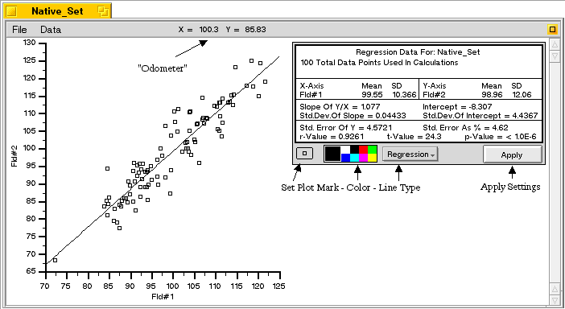
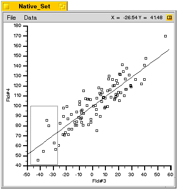
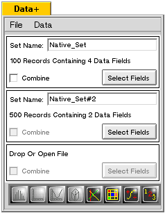

Linear Regression Analysis
If you have followed the directions for looking at the native sample file, you should have a screen that looks like this:

Looking first at the box in the right side of the window, we see that it displays the results of the regression analysis. The fields are:
Mean and SD (Standard Deviation): These are computed for each axis.
Regression Data: The regression slope (Y/X) and regression intercept are shown, along with their standard deviations.
Correlation Statistics: The Standard Error of the Mean for Y is shown, both in relative and absolute terms. Pearson's r-value, "student" t-value and the p-value are also given.
Just below the box are menus for setting the plot mark, plot color and line type. Experiment with them to see what happens. After you choose some new settings, click on the "Apply" button for them to take effect. NOTE that if there were two or more data sets chosen, there would be a regression data box for each set. More about this later...
On the side of the window showing the plot, there is an "odometer" in the menu bar which gives the location of the cursor in terms of the graph axes.
Zooming In:
Notice the small icon in the upper right corner of the menu bar. Click on it now and the results will be hidden. A portion of interest in the graph may be selected by simply clicking, holding and dragging to outline an area to be expanded:
The graph axes will be reset to approximately the bounds chosen. Note that nothing will happen if too small an area is selected. To look at a very tiny area, you will need to select more than one time in succession.
This is the area selected as shown above. Note that the sizing algorithm adjusts the axes to rounded values.
Setting Specific Axis Values:
To do this, choose "Set Axes..." from the "Data" menu.
This dialog box allows the user to set specific axis values. Enter the ones shown, starting with the "Interval". When both axes are so set, click the "Apply" button and the values will changed on the graph as shown below:To go back to the original axes, choose "Reset Axes" from the "Data" menu.
Comparing Data Across Graphs:
Now we will make a second graph and show how data points can be compared across graphs. In the DataPlus Console, press the "Select Fields" button and select data fields shown.
Then, create another regression graph by clicking the regression analysis icon. Then click the upper-right icon to hide the regression data.

First, hold down the <shift> key and outline the box as show. Note that the cursor changes to a cross when the shift key is held down. This shows that you are in a data selection mode. When the mouse button is released, the data points in the selected area are collected and presented in a dialog:
Marking Data:
In this exercise, we will mark the points. 'Mark' is the default selection of the three available. Click on the small red patch in the color control and note that the large patch to the left also becomes red. This shows the marking color. Click on the "Apply" button.
What happens is that a message is sent to ALL DataPlus programs currently running. In our case, it is the two regression plot applications plus the DataPlus Console itself. There is a menu selection in the 'Data' menu, "Allow Marking". If this is checked, the message directs the applications to mark the chosen data points with the selected color. The default for the
Suppress: This marks the point with a special symbol and removes it from the analysis.
Delete: This deletes the point from the graph and removes it from the analysis. It does not actually delete the point. Note that this can be very useful for 'cleaning up' a data set. If the DataPlus Console is enabled for marking, and if bad data records are 'Deleted' in one of the analysis tools, the 'deleted' records won't be shipped to any other analysis tools. The deletion can be removed by the 'Unselect' menu item in the 'Data' menu.
Note now that the points selected on the lower left of the left-most graph are marked in red. Most importantly, note that there are points on the right-most graph which are also marked. These are points from the same record (row). The information here is that the points selected as being low on both the X and Y axes in the first graph are evenly distributed in the second, and therefore there is likely to be little significant interaction between the two sets of variables.
Using Multiple Data Sets:

A number of related sets may be examined in the same graph as long as the axes are the same. (Actually, they don't have to be the same, but since they are plotted on the same axis, it would be very confusing if they were different). For example, if experiments are run on two separate days, it is often good to simultaneously examine the results to see any variation. The following example illustrates this:
In the DataPlus Console, drop the files "Native_Set" and "Native_Set#2" into the drop view. They may be dropped singly or together.
The result should look like this:
From the "Native_Set", select the first two fields as 'X' and 'Y' respectively. Do the same for "Native_Set#2". Then, click the regression analysis button, and a display showing both sets of data will appear, and each have their own set of regresion data and regression lines:
If you want to see the statistics for the combined sets, click on the "Combine" checkbox between the two sets in the DataPlus Console. This places all of the data points into a single set.
Clicking on the regression analysis icon will now yield a single graph:
NOTE that if a file is saved with the "Combine" option checked, only the data in the selected fields will be combined, and the distinction between the sets will be lost.
Saving and Printing choices are found in the "File" menu. Printing acts like one would expect. Saving allows the regression plot tool to keep both its data and settings. The file created will not contain all of the fields found in the DataPlus Console and can only be opened by the regression tool.